7.1 Description of Sets
Sets are
unordered collections of related members in which no members
occur more than once. Formally, sets are written with braces
around them. Thus, if S is a
set containing the members 1, 2, and 3, then S = {1, 2, 3}. Of course, because a
set is unordered, this is the same as writing S = {3, 2, 1}. If a member, m, is in a set, S, then
membership is indicated by writing m ∈ S
; otherwise, m 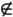 S. For example, in the set S = {1, 2, 3}, 2 ∈ S, but 4 S. To effectively use sets, we should
be familiar with some definitions, basic operations, and
properties.
7.1.1 Definitions
-
A set containing no members is the empty set. The set of all possible members is the universe. (Of course, sometimes the
universe is difficult to determine!) In set notation:
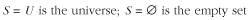
-
Two sets are equal if
they contain exactly the same members. For example, if S1 = {1, 2, 3}, S2 = {3, 2, 1}, and
S3 = {1, 2, 4},
then S1 is equal
to S2, but S1 is not equal to S3. In set notation:
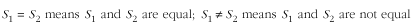
-
One set, S1, is a subset of another set,
S2, if S2 contains all of the
members of S1. For
example, if S1 =
{1, 3}, S2 = {1,
2, 3}, and S3 =
{1, 2}, then S1 is
a subset of S2,
but S1 is not a
subset of S3. In
set notation,
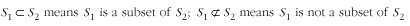
7.1.2 Basic Operations
-
The union of two sets, S1 and S2, is a set, Su, that contains all of the
members of S1 in
addition to all of the members of S2. For example, if
S1 = {1, 2, 3} and
S2 = {3, 4}, then
Su = {1, 2, 3, 4}. In set
notation:
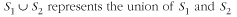
-
The intersection of two sets, S1 and S2, is a set, Si , that contains only the members
that exist in both S1 and S2. For example, if
S1 = {1, 2, 3} and
S2 = {1, 2}, then
Si = {1, 2}. In set
notation:
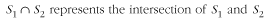
-
The difference of two sets, S1 and S2, is a set, Sd, that contains all of the
members of S1
except those in S2. For example, if
S1 = {1, 2, 3} and
S2 = {3, 4}, then
Sd = {1, 2}. In set
notation:
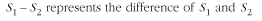
7.1.3 Properties
-
The intersection
of a set with the empty set is the empty set. The union of a
set with the empty set is the original set. This behavior is
described by the empty set
laws:
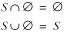
-
The intersection of a set with itself is
the original set. Similarly, the union of a set with itself is the original
set. This behavior is described by the idempotency laws:
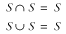
-
The intersection of a set, S1, with another set,
S2, results in the
same set as the intersection of S2 with S1. The same is true for
the union of two sets. This behavior is described by the
commutative laws:
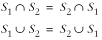
-
The intersection of a number of sets can be
performed in any order (see Figure
7.1). The same is true for the union of a number of
sets. This behavior is described by the associative laws:
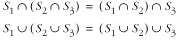
-
The intersection of a set with the union of
two others can be carried out in a distributed manner. The
same is true for the union of a set with the intersection of
two others. This behavior is described by the distributive laws :
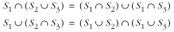
-
The intersection of a set with the union of
itself and another results in the original set. The same is
true for the union of a set with the intersection of itself
and another. This behavior is described by the absorption laws:
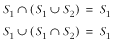
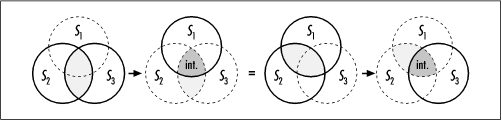
-
An interesting result occurs when the
difference of one set is taken with either the intersection
or union of two others. The resulting behavior is described
by DeMorgan's laws:
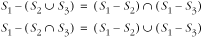 |